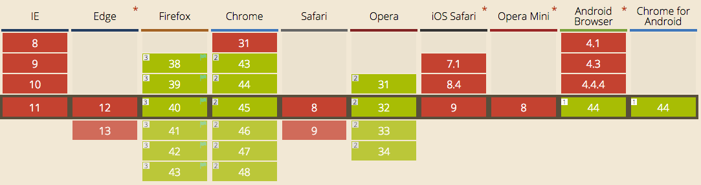

Web Animation API
Created by 손찬욱 / chanuk.son
HTML5 이전의 애니메이션
setTimeout, setInterval
느리다
setTimeout은 main Thread의 작업에 영향을 받는다.
구현하기가 복잡하고, 어렵다
구현하기가 복잡하고, 어렵다
function animate(el, x, y, duration) {
var startTime = Date.now();
var now, per;
(function loop() {
now = Date.now();
if (now >= startTime + duration) {
// animation 종료 시점 (loop 종료 시점)
el.style.transform = "translate3d(" + x + "px," + y + "px,0)";
return;
}
per = (now - startTime) / duration;
// animation 진행. easing 처리
el.style.transform = "translate3d(" + (x * per) + "px," + (y * per) + "px,0)";
// loop 재호출
setTimeout(loop, 16);
})();
}
HTML5 애니메이션 기술
| 구분 | 기술 |
|---|---|
| Javascript | requestAnimationFrame |
| CSS | CSS Transition |
| CSS | CSS Animation |
| SVG | SVG Animation |
더 빠르다
requestAnimationFrame는 setTimeout과 사용법은
동일하지만 60 fps를 보장한다.
더 빠르다
CSS 는 별도의 thread를 이용하기 때문에 빠르다.

 requestAnimationFrame VS csstransition
requestAnimationFrame VS csstransition
간단하다
CSS Transition을 이용하면 간단히 구현할수 있다.
.transition { transition: margin-left 1s linear, background-color 2s ease 1s; }
div.exampletransition:hover div.transition {
margin-left: 700px;
background-color: green;
}
제어할수 있다.
애니메이션 중간 상태를 지정할 수 있다.
@keyframes slidein {
0% {
margin-left:100%;
width:300%;
}
75% {
font-size:300%;
margin-left:25%;
width:150%;
}
100% {
margin-left:0%;
width:100%;
}
}
.target {
animation-delay : 0;
animation-direction : normal; //normal, reverse, alternate, alternate-reverse
animation-duration : 3s;
animation-iteration-count : infinite;
animation-name : slidein;
animation-play-state : running; // paused, running
animation-timing-function : linear;
animation-fill-mode : none; // none, forwards, backwards, both
}
제어할수 있다.
애니메이션 진행상태를 제어할수 있다.
animation(start/end/iteration) 이벤트를 제공
var e = document.getElementById("watchme");
// attach event
e.addEventListener("animationstart", listener, false);
e.addEventListener("animationend", listener, false);
e.addEventListener("animationiteration", listener, false);
// apply css animation
e.className = "slidein";
// event handler
function listener(e) {
var l = document.createElement("li");
switch(e.type) {
case "animationstart":
l.innerHTML = "Started: elapsed time is " + e.elapsedTime;
break;
case "animationend":
l.innerHTML = "Ended: elapsed time is " + e.elapsedTime;
break;
case "animationiteration":
l.innerHTML = "New loop started at time " + e.elapsedTime;
break;
}
document.getElementById("output").appendChild(l);
}
하지만....
기존의 모델로 좋은 성능의 애니메이션을
만드는 것은 어렵다
- CSS style 변경에 따른 구조적 성능 이슈
- Javascript 방식은 Main Thread를 점유하는 구조적인 문제
HTML5 애니메이션 기술들을
효과적으로 쉽게 제어하기 어렵다.
그래서 나왔다. 애니메이션의 종합판!
Web Animation API
Web Animation API
통합된 애니메이션 제어 모델을 제공하기 위한 자바스크립트 API
Web Animation API
- 기존 애니메이션 모델들에 동기화된 공용 Javascript API 제공
- 기존 애니메이션 규격에서 처리하기 어려운 부분(Dynamic) 보완
- 구조적 성능 문제 개선
Web Animation API 주요 기능
- 애니메이션의 재생방법의 제어
- 애니메이션의 동시적 수행의 조합
- 애니메이션의 순차적 수행의 조합
- SVG 패스를 이용한 애니메이션 구현
Animation Basic
Web Animation API Spec-1
Element.animate()
Animation = Element.animate(Keyframes, duration)
var player = document.getElementById("code1").animate([
{ transform: 'scale(1)', opacity: 1},
{ transform: 'scale(.5)', opacity: .5},
{ transform: 'scale(.667)', opacity: .667},
{ transform: 'scale(.6)', opacity: .6}
], 3000);
Element.animate()
Animation=Element.animate(Keyframes, AnimationEffectTiming)
offset을 이용하여 animation의 중간 단계를 지정할수 있다.
player = document.getElementById("code2").animate([
{ offset: 0, transform: 'translate3d(0px,0px,0)' },
{ offset: 0.25, transform: 'translate3d(100px,0px,0)' },
{ offset: 0.5, transform: 'translate3d(100px,100px,0)' },
{ offset: 0.75, transform: 'translate3d(0,100px,0)' },
{ offset: 1, transform: 'translate3d(0,0px,0)' }
], {
duration: 1500, //milliseconds
easing: "ease-in-out", // "linear", "ease", "ease-in", "ease-out" a bezier curve, etc.
delay: 10, //milliseconds
iterations: Infinity, //or a number
direction: 'alternate' //'normal', 'reverse', 'alternate', 'alternate-reverse' etc.
});
Animation 객체
http://www.w3.org/TR/web-animations/#the-animation-interface
interface Animation {
attribute AnimationEffectReadOnly effect;
attribute AnimationTimeline timeline;
attribute double startTime;
attribute double currentTime;
attribute double playbackRate;
readonly attribute AnimationPlayState playState;
readonly attribute Promise Animation ready;
readonly attribute Promise Animation finished;
void cancel ();
void finish ();
void play ();
void pause ();
void reverse ();
};
enum AnimationPlayState { "idle", "pending", "running", "paused", "finished" };
Animation 객체
Animation 동작상태를 조절할수 있다.
player = document.getElementById("code3").animate([
{ offset: 0, transform: 'scale(1)', opacity: 1 },
{ offset: 0.3, transform: 'scale(.5)', opacity: 0.5 },
{ offset: 0.7875, transform: 'scale(.667)', opacity: 0.667 },
{ offset: 1, transform: 'scale(.6)', opacity: 0.6 }
], {
duration: 1500, //milliseconds
easing: "ease-in-out", // "linear", "ease", "ease-in", "ease-out" a bezier curve, etc.
delay: 10, //milliseconds
iterations: Infinity, //or a number
direction: 'alternate' //'normal', 'reverse', 'alternate', 'alternate-reverse' etc.
});Animation 객체
playbackRate, currentTime으로 Timeline을 조절할수 있다.
player = document.getElementById("code3_1").animate([
{ offset: 0, transform: 'translate3d(0px,0px,0)' },
{ offset: 0.25, transform: 'translate3d(100px,0px,0)' },
{ offset: 0.5, transform: 'translate3d(100px,100px,0)' },
{ offset: 0.75, transform: 'translate3d(0,100px,0)' },
{ offset: 1, transform: 'translate3d(0,0px,0)' }
], {
duration: 5000, //milliseconds
easing: 'ease-in-out', //'linear', a bezier curve, etc.
iterations: 1000, //or a number
direction: 'normal', //'normal', 'reverse', 'alternate' etc.
});Promise 지원
player = document.getElementById("code4").animate([
{ offset: 0, transform: 'scale(1)', opacity: 1 },
{ offset: 0.3, transform: 'scale(.5)', opacity: 0.5 },
{ offset: 0.7875, transform: 'scale(.667)', opacity: 0.667 },
{ offset: 1, transform: 'scale(.6)', opacity: 0.6 }
], {
duration: 1500, //milliseconds
easing: "ease-in-out", // "linear", "ease", "ease-in", "ease-out" a bezier curve, etc.
delay: 10, //milliseconds
iterations: 1000, //or a number
direction: 'alternate' //'normal', 'reverse', 'alternate', 'alternate-reverse' etc.
});
var message = document.getElementById("mcode4");
// ready promise
player.ready.then(function(value) {
message.innerHTML += "[성공] 애니메이션 시작" + "<br>";
}, function(reason) {
message.innerHTML += "[실패] 애니메이션 시작" + "<br>";
});
// finished promise
player.finished.then(function(value) {
message.innerHTML += "[성공] 애니메이션 종료" + "<br>";
}, function(reason) {
message.innerHTML += "[실패] 애니메이션 종료" + "<br>";
});
var str=message.innerHTML;
Multiple Animation
Web Animation API Spec-2
Timeline Model
AnimationTimeline 객체
http://www.w3.org/TR/web-animations/#animationtimelineAnimation의 timeline을 관리함
interface AnimationTimeline {
readonly attribute double currentTime;
sequence Animation getAnimations();
};
[Constructor (DOMHighResTimeStamp originTime)]
interface DocumentTimeline : AnimationTimeline {
void play();
};
AnimationTimeline 객체
실행 중인 Animation 애니메이션을 얻음
var players = document.timeline.getAnimations();
players.forEach(function(player, i, ra) {
//player.pause();
//player.play();
});
AnimationTimeline 객체
선언된 Animation Effect를 Timeline으로 관리한다.
document.timeline.currentTime;var animation = document.timeline.play(effect);Animation 객체를 반환하여 애니메이션 제어가 가능하다
Animation Effects
KeyframeEffects
Element.animation과 유사하나, 선언시 바로 실행되지 않는다.
// define
var effect = new KeyframeEffect(document.getElementById("code5"),
[
{ opacity: 1 },
{ opacity: 0 }
], {
duration: 1000
});
// play
document.timeline.play(effect);
/*
document.getElementById("code5").animate(
[
{ opacity: 1 },
{ opacity: 0 }
], {
duration: 1000
});
*/
동시에 애니메이션 동작하기
#old1 { transition: opacity 1s ease;}
#old2 { transition: opacity 1s ease;}
#old3 { transition: opacity 1s ease;}
.fade { opacity:0; }
var els = [ document.getElementById("old1"),
document.getElementById("old2"),
document.getElementById("old3") ];
els.forEach(function(v,i) {
v.classList.add("fade");
});
GroupEffects
Group 단위로 애니메이션을 제어할수 있다.
Keyframe/Group/SequenceEffect를 포함할 수 있다.
// define
var keyframe = [
{ opacity: 1 },
{ opacity: 0 }
];
var timings = {
duration: 1000,
easing : "ease",
fill : "both"
}
// define animation effect
var group = new GroupEffect([
new KeyframeEffect(document.getElementById("code6"), keyframe, timings),
new KeyframeEffect(document.getElementById("code7"), keyframe, timings),
new KeyframeEffect(document.getElementById("code8"), keyframe, timings)
]);
document.timeline.play(group);
순차적으로 애니메이션 동작하기
지연 시간을 이용한 애니메이션 호출
#old4 { transition: opacity 1s ease;}
#old5 { transition: opacity 1s ease 1s;}
#old6 { transition: opacity 1s ease 2s;}
.fade { opacity:0; }
var els = [ document.getElementById("old4"),
document.getElementById("old5"),
document.getElementById("old6") ];
els.forEach(function(v,i) {
v.classList.add("fade");
});
SequenceEffect
순차적 애니메이션의 조합
// define
var keyframe = [
{ opacity: 1 },
{ opacity: 0 }
];
var timings = {
duration: 1000,
easing : "ease",
fill : "both"
}
// define animation effect
var sequence = new SequenceEffect([
new KeyframeEffect(document.getElementById("code9"), keyframe, timings),
new KeyframeEffect(document.getElementById("code10"), keyframe, timings),
new KeyframeEffect(document.getElementById("code11"), keyframe, timings)
]);
document.timeline.play(sequence);
Multiple Animation 제작 순서
- KeyframeEffect를 만든다.
- KeyframeEffect를 제어가 가능한 형태로 조합한다
- AnimationTimeline 객체를 이용하여 애니메이션을 동작한다.
Multiple Animation 활용 예
var sEffectA = new SequenceEffect([
new KeyframeEffect(el, keyframe, timings);
]);
var sEffectB = new SequenceEffect([
new KeyframeEffect(el, keyframe, timings);
]);
var gEffectC = new GroupEffect([sEffectA, sEffectB]);
var animation = document.timeline.play(gEffectC);
Motion Path
Motion path를 따라가는 animation 구현도 가능
.target {
motion-path: path('M93.9,46.4c9.3,9.5,13.8,17.9,23.5,17.9s17.5-7.8,17.5-17.5s-7.8-17.6-17.5-17.5c-9.7,0.1-13.3,7.2-22.1,17.1 c-8.9,8.8-15.7,17.9-25.4,17.9s-17.5-7.8-17.5-17.5s7.8-17.5,17.5-17.5S86.2,38.6,93.9,46.4z');
}브라우저 지원 범위
 http://caniuse.com/#feat=web-animationChrome 45 지원범위
Web Animation Spec-1 구현 완료, Spec-2 일부 구현
#Enable Experimental Web Platform Feature 활성화 적용시web-animations-js polifil
https://github.com/web-animations/web-animations-js
Web Animation API
Reference
-
W3C Specification
http://w3c.github.io/web-animations/ -
Chrome Enchanted: 2014년 주목할만한 HTML5 규격 4종
http://cwdoh.com/html5/2014/08/18/chrome-enchanted-notable-html5-specs-in-2014/ -
Let’s talk about the Web Animations API
http://danielcwilson.com/blog/2015/07/animations-intro/ -
CSS 애니메이션과 JavaScript 애니메이션 비교
https://developers.google.com/web/fundamentals/look-and-feel/animations/css-vs-javascript -
Web Animations API Polyfill
https://github.com/web-animations/web-animations-js -
Silky smooth Web Animations
https://www.youtube.com/watch?v=ep0_0W0qWsc -
How to use the animations API to create some Material Design animations
https://io2015codelabs.appspot.com/codelabs/web-animations-transitions-playbackcontrol#1